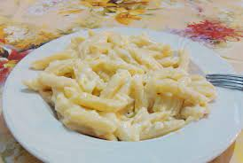

Paste cu branza

Descriere
Pastele cu branza sunt un deliciu culinar simplu de gatit pentru oricine, dar
si un preparat ce aduce aminte nostalgia pe care o simtim pentru copilarie.
Se recomanda sa aveti urmatoarele ingrediente gata pentru a gati Pastele
intr-un timp cat mai scurt.
Ingrediente:
- Paste fainoase de marimea si forma preferata
- Telemea de oaie/vaca dupa preferinta
- Ulei de floarea soarelui/masline
- Parmezan
Pasi de urmat:
- Se pun pastele la fiert pentru 10-11 minute
- Cat timp fierb pastele, radeti 300 grame de telemea
- Se scot pastele din apa fiarta si se scurg
- Se incalzeste tigaia si se pune putin ulei
- Se adauga in tigaie pastele, urmate de telemeaua rasa
- Se prepara la foc mediu pana cand se topeste telemeaua
- Se opreste focul si se savureaza deliciul gatit
- Se adauga parmezan in farfurie dupa bunul plac
Pofta buna!